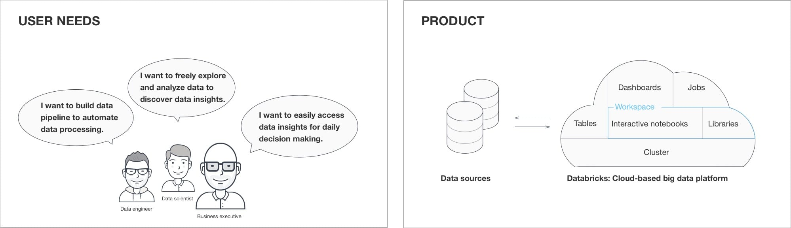
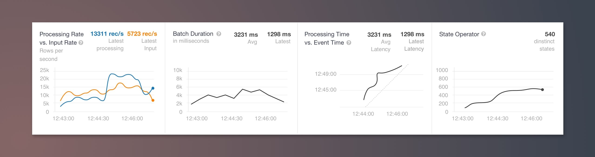
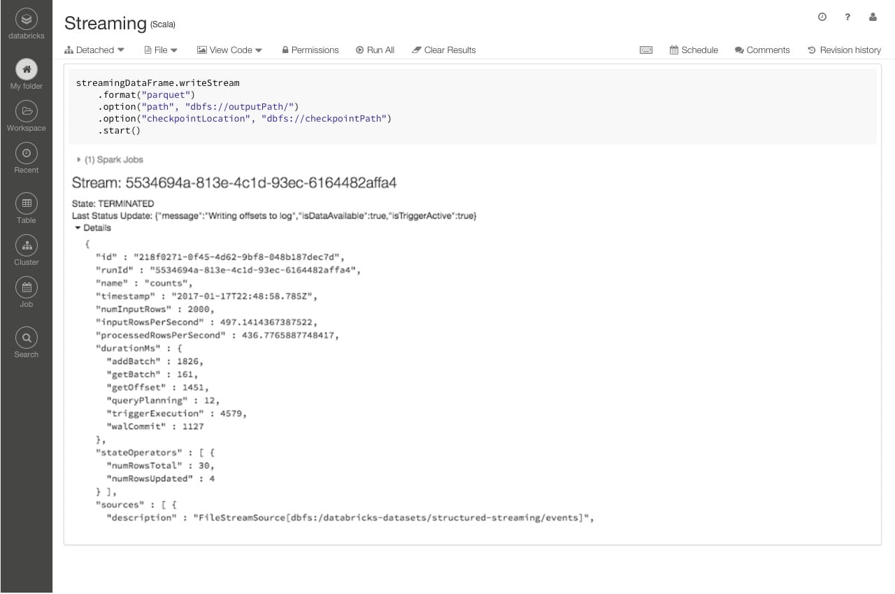
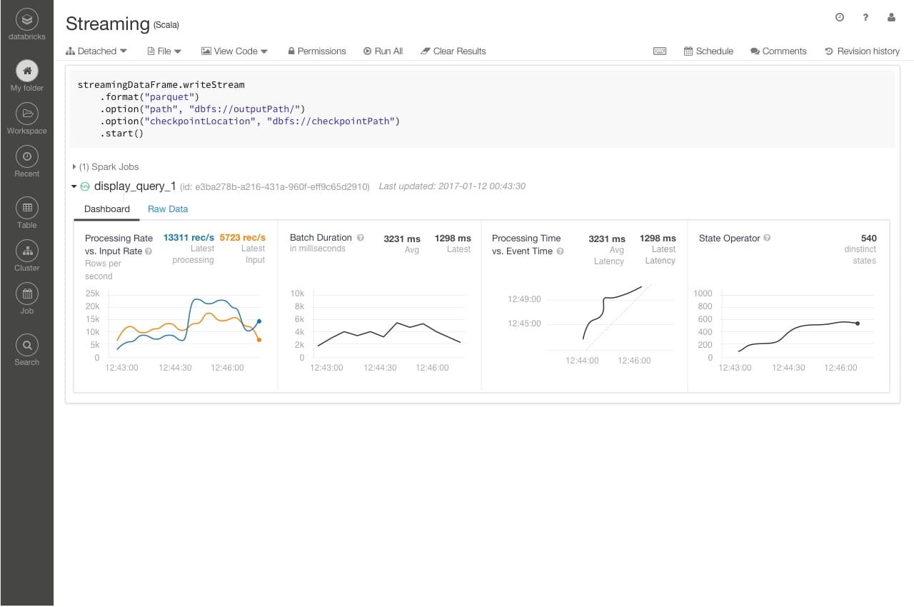

Making big data simple
How I approach designs in a complex domain
Background
Databricks provides a unified analytics platform to accelerate business outcomes by unifying data science, engineering, and business. I joined the company since September 2015 and did several end-to-end projects to facilitate a more seamless experience when it comes to exploring and transforming big data. See below a high-level view of who we are building for and how our product works.
Role
A designer at a startup wears multiple hats. I not only drive product design from ideation to implementation but also use our product as much as possible for data-informed designs. For brevity, I listed a case study as below to demonstrate I approach designs at Databricks.
Visualizing streaming information case study
Background
When running a streaming task to process data in real time, users often want to know the current status of the task, and also monitor the progress. In the backend, we generate the status metadata every few seconds. The goal here is to organize streaming information to make it easy for users to consume.
Before: display state details from raw data
Solution
A picture is worth a thousand words. After working closely with our engineers, we came up with the following visualizations to facilitate rapid analysis of the recent progress of a streaming task. We also collapse the visualizations by default after incorporating internal users' feedback. Last but not least, I made an icon with different colors to indicate the status of the streaming task, and we also give users an easy way to see more information when hovering over the icon.
After: visualize state progress
Design Process
Expert interview: To get more context quickly, I sat with one of our streaming experts with the following questions:
- What each row of metadata mean? How important is it to the user?
- What questions may the users have on their streaming task? And why?
- What other similar products shall I look into?
- Once we have some ideas, who shall I talk to internally to get feedback?
More research on my own: After the expert interview, I looked up similar products and searched the terminologies I did not understand well earlier to get a better picture of the domain. I also started to explore the visualizations for showing the progress.
Design together with the engineers: Next I sat together with our two engineers (two streaming experts and one of them will implement the designs), shared with them the research I had done, and we started to whiteboard the visualizations each of us had in mind. At last, we reached consensus on:
- What information we need to surface and what to hide
- What graphs make more sense
- What are the possible layouts(which one works best was not decided yet)
- How it fits in the current UI
Iterations: With those early concepts, I went back to work in Sketch, explored different layouts, collected feedback from a broader group and iterated quickly. I also made a streaming icon in Codepen to prototype three different states.
Active: processing data
Active: waiting for data or trigger
Add design specs and check in often: The iterations helped finalize the layout and interaction details for the key mock. I also documented the key decisions we made during the process and explained why we did it in case other stakeholders have questions. After getting a signed off from our broader group, I worked on the design specs - adding other states(loading, empty, error, and etc) and measurements. I also checked in often to clarify questions and revised small details when we got more feedback.
Outcome
By working closely with our two engineers and getting feedback regularly from other stakeholders, we were able to design and implement the project in one sprint (2 weeks).